with
with  (ps nm
(ps nm = rms pulse spread); loss is ≈ 0.2 dB/km at 1550 nm, limited by Rayleigh scattering
= rms pulse spread); loss is ≈ 0.2 dB/km at 1550 nm, limited by Rayleigh scattering  and infrared absorption.
and infrared absorption.
Dispersion
- Intermodal (multimode):
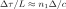
(step),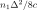
(graded). - Chromatic (single-mode): group delay per length
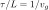
;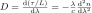
for material dispersion, plus waveguide dispersion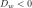
from the -dependence of mode confinement. Dispersion-shifted fibre moves the zero to 1550 nm; non-zero DSF keeps
-dependence of mode confinement. Dispersion-shifted fibre moves the zero to 1550 nm; non-zero DSF keeps 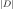
small but non-zero to suppress four-wave mixing in DWDM. - Polarisation mode dispersion: random birefringence,
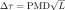
(≈ 0.1 ps/√km).
Bit-rate rule (Gaussian pulses):
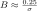
for RZ and twice that for NRZ, with rms spread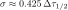
.Attenuation
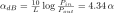
(Kao and Hockham 1966; Kapron et al. 1970; Miya et al. 1979). Mechanisms: Rayleigh scattering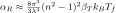
(density fluctuations frozen at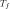
), OH absorption at 1383 nm (removed in low-water-peak fibre), IR absorption of Si–O beyond 1.6 µm, micro- and macro-bending loss.Worked example
1550 nm,  ps/(nm km), DFB laser modulated at 10 Gb/s with
ps/(nm km), DFB laser modulated at 10 Gb/s with
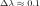
nm (modulation-broadened): over 80 km,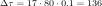
ps, more than one bit period (100 ps): dispersion compensation (DCF, FBG, or digital coherent DSP) is needed. Loss over 80 km at 0.2 dB/km: 16 dB — amplified by an EDFA.Dispersion budget and compensation
A link works if the accumulated spread stays inside the bit slot,
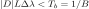
. A compensating fibre of opposite sign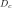
and length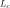
adds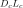
: the condition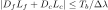
gives a window of lengths around full compensation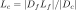
, and the effective coefficient of the spliced link is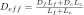
. Numbers: 100 km with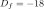
ps/(nm km), nm, 2.5 Gb/s: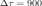
ps > 400 ps. With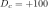
: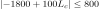
→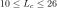
km (18 km cancels exactly). The minimum is 10 km, not 26 (solved exam papers).Fibre Bragg gratings
Periodic index change  written by UV: reflects
written by UV: reflects  .
.  shifts ~1.2 pm/µε and ~10 pm/K: strain and temperature sensors; chirped FBGs compensate dispersion (Bragg gratings).
shifts ~1.2 pm/µε and ~10 pm/K: strain and temperature sensors; chirped FBGs compensate dispersion (Bragg gratings).
Picture: dispersion of standard single-mode fibre
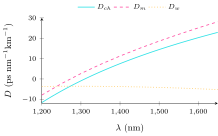
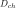
of standard single-mode fibre as the sum of material dispersion and waveguide dispersion , crossing zero near 1310 nm.
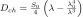
with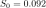
ps nm km
km ,
, 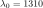
nm (the ITU fit for G.652 fibre); from the silica Sellmeier equation,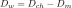
negative.Engineering applications
Link design (power and dispersion budgets), choice of 1310 vs 1550 nm, DWDM channel plans, FBG sensing in structures and aircraft, distributed sensing by Rayleigh/Brillouin backscatter (OTDR).
Exam-style exercise
G.652 fibre (, nm). (a)  at 1550 and 1625 nm. (b) Dispersion-limited length at 10 Gb/s with 0.1 nm source width (criterion
at 1550 and 1625 nm. (b) Dispersion-limited length at 10 Gb/s with 0.1 nm source width (criterion  ). (c) At 1310 nm, what then limits the length?
). (c) At 1310 nm, what then limits the length?
Solution
(a)
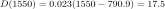
,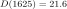
ps/(nm km). (b)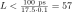
km. (c) Dispersion nearly vanishes: loss (0.33 dB/km) limits the span, and without EDFAs at 1310 nm long links need 1550 nm plus dispersion compensation (link design).Pitfall
is in ps/(nm km): multiply by length in km and spectral width in nm. Using the laser linewidth instead of the modulated spectral width underestimates spread at high bit rates.